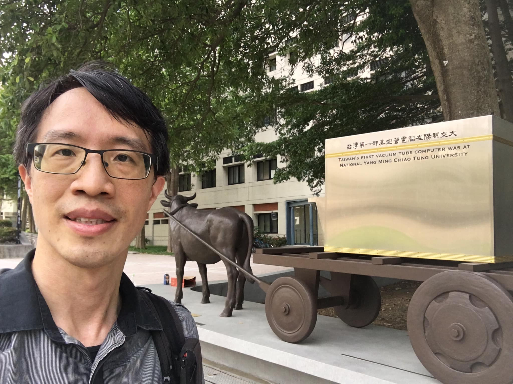

Meng-Hsun Tsai
ProfessorDeputy Director, Information Technology Service Center
Internet and Mobile Service Laboratory (IMS Lab)
Department of Computer Science
National Yang Ming Chiao Tung University
E-mail: tsaimhcs.nycu.edu.tw
Tel: +886-3-5712121 ext. 56668
- 2004 ~ 2009: Ph.D., Computer Science, National Chiao Tung University
- 2002 ~ 2004: M.S., Computer Science & Information Engineering, National Chiao Tung University
- 1998 ~ 2002: B.S., Computer Science & Information Engineering, National Chiao Tung University
- Computer System Administration (undergraduate; 2023 Fall, 2024 Fall)
- Computer Network Administration (undergraduate; 2024 Spring, 2025 Spring)
- Introduction to Computers and Programming (undergraduate; 2024 Fall)
- Digital Circuit Design (undergraduate; 2024 Spring)
NCKU (2010 Fall - 2023 Spring)
- Program Design (1) (undergraduate; 2020 Fall, 2021 Fall, 2022 Fall)
- Advanced Competitive Programming (graduate; 2017 Spring, 2018 Spring, 2019 Spring, 2020 Spring, 2021 Fall)
- Computer System Administration (undergraduate; 2023 Spring)
- Computer System and Network Administration (graduate; 2012 Fall, 2013 Fall, 2014 Fall, 2016 Fall, 2021 Spring, 2022 Spring)
- Mobile Network and Service (graduate; 2010 Fall, 2011 Fall, 2012 Fall, 2013 Fall, 2014 Fall, 2015 Fall, 2016 Fall, 2017 Fall, 2018 Fall, 2019 Fall, 2020 Fall)
- Program Design (2) (undergraduate; 2011 Spring, 2012 Spring, 2013 Spring, 2014 Spring, 2015 Spring, 2016 Spring, 2017 Spring, 2018 Spring, 2019 Spring, 2020 Spring)
- Computer Programming (undergraduate; 2020 Spring)
- Software Defined Network (SDN)/Network Function Virtualization (NFV) Core Network (graduate; 2015 Fall) (MOOCs version in OpenEdu platform and MOE MOOCs platform)
- Service Study (3) (undergraduate; 2013 Fall, 2016 Spring)
- Competitive Programming (undergraduate; 2013 Spring, 2015 Spring)
- Competitive Algorithm Design and Practice (undergraduate; 2014 Spring, 2016 Spring)
- Service Study (1) (undergraduate; 2012 Fall)
- Next Generation Mobile Network (graduate; 2011 Spring, 2012 Spring)
- Network and Information Technology (undergraduate, general education; 2011 Spring, 2015 Spring)
NYCU (2023 Fall - present)
- Software Defined Network (SDN)
- Internet of Things (IoT)
- Mobile Network (5G/6G)
- Cybersecurity
- Journal Editor
- Associate Editor, Wireless Networks, 2023-present
- Guest Editor, Special Issue on AI Drives Our Future Life (ICS), Journal of Information Science and Engineering (JISE), 2021
- Guest Editor, Special Section on Deep Learning Technologies: Architecture, Optimization, Techniques, and Applications, IEICE Transactions on Information and Systems, 2021
- Guest Editor, Special Issue on AI Drives Our Future Life, Sensors, 2021
- Guest Editor, Special Issue on AI Drives our Future Life, Journal of Ambient Intelligence and Humanized Computing, 2021
- Conference Service
- IEEE/IFIP Network Operations and Management Symposium (NOMS): 2024 (Publication Co-chair)
- IEEE Vehicular Technology Conference (VTC): VTC2018-Spring (PC; T7: Ad-Hoc, M2M, and Sensor Networks), VTC2017-Fall (PC; T7: Ad-Hoc, M2M, and Sensor Networks, W6: Networked Vehicles for Intelligent Transportation and Smart Grids (NetV))
- IEEE International Conference on Recent Advances in Systems Science and Engineering (RASSE): 2022 (PC), 2023 (PC), 2024 (PC)
- IEEE Symposium on Computers and Communications (ISCC): 2018 (PC), 2019 (PC), 2020 (PC), 2021 (PC), 2022 (PC), 2023 (PC), 2024 (PC)
- IEEE International Conference on Parallel and Distributed Systems (ICPADS): 2011 (PC)
- Asias-Pacific Network Operations and Management Symposium (APNOMS): 2013 (PC), 2014 (PC), 2015 (PC), 2016 (PC), 2017 (PC), 2019 (PC), 2020 (PC), 2021 (PC), 2022 (PC), 2023 (Publication Co-chair)
- Wireless and Optical Communications Conference (WOCC): 2018 (PC), 2020 (PC)
- TANET: 2011 (PC), 2016 (PC), 2017 (PC), 2018 (PC), 2019 (Track Chair: 『校務研究、磨課師 (MOOCs)、K12資訊應用教育與教學、偏鄉資訊教育與應用』), 2020 (Track Chair: 「軟體定義網路、網路功能虛擬化」), 2021 (Track Chair: 「軟體定義網路、網路功能虛擬化」)
- National Computer Symposium (NSC): 2017 (PC)
- Mobile Computing (MC): 2016 (PC), 2017 (PC)
- International Computer Symposium (ICS): 2016 (PC), 2020 (Program Co-chair) , 2024 (Program Co-chair)
- Academic Society
- 2024/3-present, Adjunct Researcher, National Center for High-performance Computing (NCHC), NARLabs (財團法人國家實驗研究院 國家高速網路與計算中心 合聘研究員)
- 2023/12-present, Deputy Director, Information Technology Service Center, NYCU (國立陽明交通大學 資訊技術中心 副主任 兼 校務資訊系統組 組長)
- 2023/8-present, Professor, Department of Computer Science, NYCU (國立陽明交通大學 資訊工程系 教授)
- 2023/8-2024/7, Adjunct Professor, Center of Teacher Education, NCKU (國立成功大學 師資培育中心 兼任教授)
- 2021/9-2023/7, Adjunct Professor, Department of Computer Science, NYCU (國立陽明交通大學 資訊工程系 合聘教授)
- 2010/9-2023/7, Professor (incl. Assistant/Associate periods), Department of Computer Science and Information Engineering, National Cheng Kung University (國立成功大學 資訊工程系 教授)
- 2020/10-2023/7, Deputy Director, Computer and Network Center, NCKU (國立成功大學 計算機與網路中心 副主任)
- 2020/8-2023/7, Director, Project Office for Academic Affairs Research, NCKU (國立成功大學 教務系統研究專案辦公室 主任)
- 2012/7-2012/9, Visiting Scholar in USC, Los Angeles, U.S.
- 2008/7-2008/12, Summer Intern in IBM, Taipei
- 2006/7-2006/9, Summer Intern in Otto-von-Guericke-University Magdeburg, Germany
- 2023 IEEE ICCE-TW Best Paper Award
- 2023 IEEE IS3C Best Paper Award
- 2021 Honorable Mention Award, Young Scholar Innovative Research Competition, Taiwan Comprehensive University System (臺灣綜合大學系統「年輕學者創新研發成果選拔」佳作獎)
- 2021 MC Best Paper Award
- 2020 APNOMS Best Paper Award
- 2020 NCKU Distinguished Mentor Award (成功大學輔導優良導師)
- 2019 SGIoT Best Paper Award
- 2019 NCKU Outstanding Teaching Excellence Award (top 1%) (成功大學教學傑出教師)
- 2017 MC Best Oral Presentation Award
- 2017 NCKU Teaching Excellence Award (top 5%) (成功大學教學優良教師)
- 2014 NCKU Outstanding Teaching Excellence Award (top 1%) (成功大學教學傑出教師)
- 2012 WPMC Best Paper Award
- 2012 The Exploration Research Award of Pan Wen Yuan Foundation (2012 潘文淵考察研究獎)
- 2010 Outstanding Contribution Award, IEEE Taipei Section (2010 IEEE Taipei Section 傑出貢獻獎)
- 2010 Best Thesis Award of IICM (中華民國資訊學會 2010 年『碩、博士最佳論文獎』)
- 2008 MediaTek Fellowship (第七屆聯發科技獎學金)
- 2008 IBM Ph.D. Fellowship
- 2007 Outstanding Research Award, CS, NCTU (2007 交大資工傑出研究獎)
- 2007 ZyXel Fellowship
- 2004 Best Thesis Award of IICM (中華民國資訊學會 2004 年『碩、博士最佳論文獎』)
- 2002 Honorary member of the The Phi Tau Phi Scholastic Honor Society, R.O.C. (2002 年斐陶斐榮譽學會榮譽會員)
- 2024, Chun-Hsien Lin (林峻賢), Pan Wen Yuan Scholarship. (潘文淵獎學金)
- 2022, 陳昭穎, College Student Participation in Research Projects, National Science and Technology Council, Taiwan. (國科會大專生計畫: 校園網路現況視覺化專題研究)
- 2022, Yu-Ting Wang (王俞婷), Honorary member of the The Phi Tau Phi Scholastic Honor Society, R.O.C. (斐陶斐榮譽學會榮譽會員)
- 2021, Yun-Zhan Cai (蔡昀展), Best Ph.D. Thesis Award, IEEE Tainan Section (IEEE 台南分會 最佳博士論文獎) (info)
- 2021, Yun-Zhan Cai (蔡昀展), Hao-Zhong Zheng (鄭皓中), Ching-Yuan Wang (王靖元), Honorary member of the The Phi Tau Phi Scholastic Honor Society, R.O.C. (斐陶斐榮譽學會榮譽會員)
- 2021, 黃睿澤, College Student Participation in Research Projects, Ministry of Science and Technology, Taiwan. (科技部大專生計畫: 基於BitTorrent的數位貨幣系統)
- 2021, 蘇名偉, College Student Participation in Research Projects, Ministry of Science and Technology, Taiwan. (科技部大專生計畫: 應用於SDN可程式化資料平面的TCP SYN Flood與UDP Flood之偵測與防禦)
- 2020, Chun-Chi Fang (方鈞麒), Best Thesis Award, Taiwan Institute of Electrical and Electronic Engineering (TIEEE), Taiwan. (台灣電機電子工程學會 最佳碩博士論文獎)
- 2020, Yun-Zhan Cai (蔡昀展), Google PhD Fellowship. (press)
- 2020, 黃政瑋, College Student Participation in Research Projects, Ministry of Science and Technology, Taiwan. (科技部大專生計畫: 網路攝影機之脆弱度辨識)
- 2020, Hui-Ling Chang (張蕙玲), Lam Research Award, Lam Research Corporation, U.S.A. (柯林論文獎)
- 2020, Chia-Ying Lin (林佳瑩), Best Thesis Award, Institute of Information & Computing Machinery (IICM), Taiwan. (中華民國資訊學會 最佳碩博士論文獎)
- 2019, Chia-Ying Lin (林佳瑩), Best Ph.D. Thesis Award, IEEE Tainan Section (IEEE 台南分會 最佳博士論文獎) (info)
- 2019, 孫名柔, College Student Participation in Research Projects, Ministry of Science and Technology, Taiwan. (科技部大專生計畫: Anomaly Detection in SDN with PDP)
- 2019, Chia-Ying Lin (林佳瑩), Honorary member of the The Phi Tau Phi Scholastic Honor Society, R.O.C. (斐陶斐榮譽學會榮譽會員)
- 2018, Chan Lam Lao (劉俊林), College Student Participation in Research Projects, Ministry of Science and Technology, Taiwan. (科技部大專生計畫: Detecting DDoS Attack in Software-Defined Network through Convolutional Neural Network) (withdraw due to early graduation)
- 2018, Chun-Chi Fang (方鈞麒), Honorary member of the The Phi Tau Phi Scholastic Honor Society, R.O.C. (斐陶斐榮譽學會榮譽會員)
- 2018, He-Teng Chang (張鶴騰), Best Thesis Award, Institute of Information & Computing Machinery (IICM), Taiwan. (中華民國資訊學會 最佳碩博士論文獎)
- 2018, Chia-Ying Lin (林佳瑩), Linux Foundation Scholarship (with invitation to attend ONS North America 2018)
- 2018, Chia-Ying Lin (林佳瑩), WeTech Qualcomm Global Scholars
- 2017, He-Teng Chang (張鶴騰), Best Thesis Award, Taiwan Institute of Electrical and Electronic Engineering (TIEEE), Taiwan. (台灣電機電子工程學會 最佳碩博士論文獎)
- 2017, Yun-Zhan Cai (蔡昀展), College Student Research Award, Ministry of Science and Technology, Taiwan. (科技部大專生計畫研究創作獎: 以OpenFlow為基礎之視覺化網路即時路況監測)
- 2017, Chia-Ying Lin (林佳瑩), GHC Scholarship (with invitation to attend Grace Hopper Celebration of Women in Computing)
- 2017, Chun-Chi Fang (方鈞麒), College Student Participation in Research Projects, Ministry of Science and Technology, Taiwan. (科技部大專生計畫: 基於SDN之網路服務品質優化機制)
- 2017, Shang-Lin Lu (呂尚霖), Best Thesis Award, Institute of Information & Computing Machinery (IICM), Taiwan. (中華民國資訊學會 最佳碩博士論文獎)
- 2016, Yun-Zhan Cai (蔡昀展), Pan Wen Yuan Scholarship. (潘文淵獎學金)
- 2016, He-Teng Chang (張鶴騰), 國際積體電路電腦輔助設計(CAD)軟體製作競賽 定題組B題 國內賽 優等
- 2016, Shang-Lin Lu (呂尚霖), Best Thesis Award, Taiwan Institute of Electrical and Electronic Engineering (TIEEE), Taiwan. (台灣電機電子工程學會 最佳碩博士論文獎)
- 2016, You-Huei Ju (朱宥繐), College Student Research Award, project title: iParking -- Real-Time Parking Space Monitor and Guiding System with Cloud Service, Ministry of Science and Technology, Taiwan. (科技部大專生計畫研究創作獎: 愛停車-雲端停車格即時監控暨引導系統)
- 2016, You-Huei Ju (朱宥繐), Honorary member of the The Phi Tau Phi Scholastic Honor Society, R.O.C. (斐陶斐榮譽學會榮譽會員)
- 2016, Yun-Zhan Cai (蔡昀展), College Student Participation in Research Projects, Ministry of Science and Technology, Taiwan. (科技部大專生計畫: 以OpenFlow為基礎之視覺化網路即時路況監測)
- 2016, Chia-Ying Lin (林佳瑩), Garmin Scholarship (Garmin 獎學金)
- 2015, He-Teng Chang (張鶴騰), Yi-Long Lu (呂宜龍), 國際積體電路電腦輔助設計(CAD)軟體製作競賽 定題組B題 國內賽佳作
- 2015, He-Teng Chang (張鶴騰), Novatek Scholarship (聯詠科技獎學金)
- 2015, Pei-Hua Su (蘇珮華), Honorary member of the The Phi Tau Phi Scholastic Honor Society, R.O.C. (斐陶斐榮譽學會榮譽會員)
- 2015, You-Huei Ju (朱宥繐), College Student Participation in Research Projects, project title: iParking -- Real-Time Parking Space Monitor and Guiding System with Cloud Service, Ministry of Science and Technology, Taiwan. (科技部大專生計畫: 愛停車-雲端停車格即時監控暨引導系統)
- 2015, Chia-Ying Lin (林佳瑩), Outstanding Engineering Student Award, Chinese Institute of Engineers, Taiwan. (中國工程師學會 優秀工程學生獎學金)
- 2014, Hung-Wei Kao (高宏瑋), Best Thesis Award, Institute of Information & Computing Machinery (IICM), Taiwan. (中華民國資訊學會 最佳碩博士論文獎)
- 2013, Guan-Yu Chen (陳冠宇), College Student Participation in Research Projects, Ministry of Science and Technology, Taiwan. (科技部大專生計畫: 管你停哪裡－適地性停車格引導服務)
- 2021, 張祐誠, College Student Participation in Research Projects, Ministry of Science and Technology, Taiwan. (科技部大專生計畫: 以基於P4之軟體定義網路改良NAT穿越機制)
- 2020, 王聖中, College Student Participation in Research Projects, Ministry of Science and Technology, Taiwan. (科技部大專生計畫: 基於程式教學之線上解題與遊戲整合系統)
- 2017, Lo-An Chen (陳珞安), College Student Participation in Research Projects, Ministry of Science and Technology, Taiwan. (科技部大專生計畫: 整合智慧衣與語音通話之醫療照護應用開發)
- 2015, Chi-Bo Lin (林季伯), College Student Participation in Research Projects, Ministry of Science and Technology, Taiwan. (科技部大專生計畫: 基於互動式臉部表情虛擬實境之視訊通話)
- Journal Papers
- International Journal
- Y.-T. Wang, T.-Y. Lin, S.-I. Sou, L.-A. Chen, M.-H. Tsai Y.-R. Chen, C.-H. Tu, Markov Clustering-based Content Placement in Roadside-Unit Caching with Deadline Constraint. IEEE Transactions on Intelligent Transportation Systems, 25(9): 11881-11892, 2024.
- H. Vo, V. Hoang Long Nguyen, V. L. Tran, F. Ferrero, F. -Y. Lee and M.-H. Tsai, Advance Path Loss Model for Distance Estimation Using LoRaWAN Network's Received Signal Strength Indicator (RSSI) IEEE Access, 7: 83205-83216, 2024. (NSTC 112-2221-E-A49-182) (DOI: 10.1109/ACCESS.2024.3412849) (SCI/EI) (IF 2022: 3.9, Rank: 73/158=46.2%, Category: Computer Science, Information Systems)
- J. Zhang, P.-H. Tsai and M.-H. Tsai,
Semantic2Graph: graph‑based multi‑modal feature fusion for action segmentation in videos
Applied Intelligence (2024).
(DOI: 10.1007/s10489-023-05259-z)
(SCI/EI) (IF 2022: 5.3, Rank: 48/145=33.1%, Category: Computer Science, Artificial Intelligence)
2023
- C.-H. Yang, J.-P. Wu, F.-Y. Lee, T.-Y. Lin and M.-H. Tsai,
Detection and Mitigation of SYN Flooding Attacks through SYN/ACK Packets and Black/White Lists
Sensors 2023; 23(8):3817.
(NSTC 110-2221-E-006-016-, 111-2221-E-006-160-)
(DOI: 10.3390/s23083817)
(SCI/EI) (IF 2021: 3.847, Rank: 19/64=29.7%, Category: Instruments and Instrumentation)
2022
- Y.-P. Tuan, L.-A. Chen, T.-Y. Lin, T.-Y. Lin, Y.-T. Wang, S.-I. Sou and M.-H. Tsai, Improving QoS Mechanisms for IEEE 802.11ax with Overlapping Basic Service Sets Wireless Networks (MOST 110-2221-E-006-016-, 111-2221-E-006-160-) (DOI: 10.1007/s11276-022-03148-w) (SCI/EI) (IF 2020: 2.602, Rank: 127/273=46.5%, Category: Engineering, Electrical and Electronic)
- T.-Y. Lin, C.-Y. Wang, Y.-P. Tuan, M.-H. Tsai and Y.-R. Chen, A Study on Traffic Asymmetry for Detecting DDoS Attack in P4-based SDN Journal of Information Science and Engineering (JISE), 38(6):1265-1283, 2022 (MOST 109-2221-E-006-160-, 110-2221-E-006-016-)
- Y.-T. Wang, Y.-Z. Cai, L.-A. Chen, S.-J. Lin,R.-S. Liu, M.-H. Tsai, Reducing Download Delay for Cooperative Caching in Small Cell Network. Wireless Networks, 28: 587-602, 2022 (MOST 109-2221-E-006-160-, 110-2221-E-006-016-) (DOI: 10.1007/s11276-021-02844-3) (SCI/EI) (IF 2020: 2.602, Rank: 127/273=46.5%, Category: Engineering, Electrical and Electronic)
- P.-H. Tsai, J.-B. Zhang and M.-H. Tsai,
An Efficient Probe-Based Routing for Content-Centric Networking.
Sensors, 22(1): 341, 2022
(MOST 108-2221-E-006-112-, 109-2221-E-006-160-)
(DOI: 10.1016/j.comnet.2021.108167)
(SCI/EI) (IF 2019: 3.111, Rank: 14/53=26.4%, Category: Computer Science, Hardware & Architecture)
2021
- Y.-Z. Cai, Y.-T. Wang and M.-H. Tsai, Dynamic Adjustment for Proactive Flow Installation Mechanism in SDN-based IoT. Computer Networks, 194: 108167, 2021 (MOST 108-2221-E-006-112-, 109-2221-E-006-160-) (DOI: 10.1016/j.comnet.2021.108167) (SCI/EI) (IF 2019: 3.111, Rank: 14/53=26.4%, Category: Computer Science, Hardware & Architecture)
- Y.-Z. Cai, T.-Y. Lin, Y.-T. Wang, Y.-P. Tuan and M.-H. Tsai,
E-Replacement: Efficient Scanner Data Collection Method in P4-based Software-defined Networks
International Journal of Network Management, 31(6), [e2162], 2021
(MOST 108-2221-E-006-112-, 109-2221-E-006-160-)
(DOI: 10.1002/nem.2162)
(SCI/EI) (IF 2019: 1.338, Rank: 122/156=78.2%, Category: Computer Science, Information Systems)
2019
- M.-H. Tsai, C.-C. Chuang, S.-F. Chou, A.-C. Pang and G.-Y. Chen, Enabling Efficient and Consistent Network Update in Wireless Data Centers IEEE Transactions on Network and Service Management, 16(2): 505-520, 2019 (MOST 106-2221-E-006-007-, 107-2221-E-006-062-) (DOI: 10.1109/TNSM.2019.2899763) (SCI/EI) (IF 2017: 3.286, Rank: 26/148=17.6%, Category: Computer Science, Information Systems)
- S.-I. Sou, M.-R. Li, S.-H. Wang and M.-H. Tsai,
File Distribution via Proximity Group Communications in LTE-Advanced Public Safety Networks
Computer Networks, 149: 93-101, 2019 (webpage)
(MOST 104-2221-E-006-041-, 105-2221-E-006-186-)
(SCI/EI) (IF 2017: 2.522, Rank: 12/52=23.1%, Category: Computer Science, Hardware & Architecture)
2018
- C.-Y. Lin, H.-L. Chang, M.-T. Wu, Y.-Z. Cai, Y.-T. Wang, L.-A. Chen, M.-H. Tsai and R.-S. Liu, Reducing Signal Overload by Disconnection Tolerant Voice Service in Heterogeneous Networks IEEE Access, 7: 332-346, 2019 (MOST 106-2221-E-006-007-, 107-2221-E-006-062-) (DOI: 10.1109/ACCESS.2018.2885361) (SCI/EI) (IF 2017: 3.557, Rank: 24/146=16.4%, Category: Computer Science, Information Systems)
- H.-L. Chang and M.-H. Tsai,
Optimistic DRX for Machine-type Communications in LTE-A Network
IEEE Access, 6: 9887-9897, 2018
(MOST 105-2221-E-006-186-, 106-2221-E-006-007-)
(DOI: 10.1109/ACCESS.2018.2791466)
(SCI/EI) (IF 2017: 3.557, Rank: 24/146=16.4%, Category: Computer Science, Information Systems)
2017
- Y.-T. Peng, S.-I. Sou, M.-H. Tsai and C.-S. Lin, Multipath Mobile Data Offloading of Deadline Assurance with Policy and Charging Control in Cellular/WiFi Networks Computer Networks, 129: 17-27, 2017 (webpage) (MOST 104-2221-E-006-041-, 105-2221-E-006-186-) (DOI: 10.1016/j.comnet.2017.08.021) (SCI/EI) (IF 2017: 2.522, Rank: 12/52=23.1%, Category: Computer Science, Hardware & Architecture)
- C.-F. Yang, Y.-H. Ju, C.-Y. Hsieh, C.-Y. Lin, M.-H. Tsai and H.-L. Chang, iParking - A Real-Time Parking Space Monitoring and Guiding System. Vehicular Communications, 9: 301-305, 2017 (DOI: 10.1016/j.vehcom.2017.04.001) (MOST 104-2815-C-006-029-E, 105-2221-E-006-186-) (SCI/EI) (IF 2017: 3.289, Rank: 21/87=24.1%, Category: Telecommunications)
- C.-H. Lai, H.-L. Chang, M.-H. Tsai and C.-Y. Lin, Reducing Costs of LIPA Handover through Bearer Reservation with Preemption. IEEE Transactions on Vehicular Technology, 66(7): 6428-6438, 2017 (DOI: 10.1109/TVT.2016.2646519) (MOST 104-2221-E-006-041-, 105-2221-E-006-186-) (SCI/EI) (IF 2017: 4.432, Rank: 3/35=8.6%, Category: Transportation Science & Technology)
- C.-Y. Lin, H.-W. Kao, M.-H. Tsai and H.-L. Chang,
Gateway-Assisted Two-Stage Radio Access for Machine Type Communication in LTE-Advanced Network.
Computer Communications, 105(C): 79-88, 2017
(DOI: 10.1016/j.comcom.2016.12.017)
(MOST 104-2221-E-006-041-, 105-2221-E-006-186-)
(SCI/EI) (IF 2017: 2.613, Rank: 32/87=27.8%, Category: Telecommunications)
2016
- H.-L. Chang, C.-G. Wang, M.-T. Wu, M.-H. Tsai and C.-Y. Lin, Gateway-assisted Retransmission for Lightweight and Reliable IoT Communications. Sensors, 16(10):1560, 2016 (DOI: 10.3390/s16101560) (MOST 104-2221-E-006-041-, MOST104-3115-E- 009-006-) (SCI/EI) (IF 2016: 2.677, Rank: 10/58=17.2%, Category: Instrument & Instrumentation)
- M.-H. Tsai, C.-M. Chou and K.-C. Lan,
Avoiding Biased-feeding in the Scheduling of Collaborative Multipath TCP.
PLoS ONE, 11(8), 2016 (DOI: 10.1371/journal.pone.0161213)
(MOST 104-2221-E-006-041-)
(SCI/EI) (IF 2016: 2.806, Rank: 15/64=23.4%, Category: Multidisciplinary Sciences)
2015
- Y.-Y. Shih, A.-C. Pang, M.-H. Tsai and C.-H. Chai, A Rewarding Framework for Network Resource Sharing in Co-channel Hybrid Access Femtocell Networks. IEEE Transactions on Computers, 64(11): 3079-3090, 2015. (DOI: 10.1109/TC.2015.2394453) (NSC 102-2221-E-006-113-MY2) (SCI/EI) (IF 2015: 1.723, Rank: 12/51=23.5%, Category: Computer Science, Hardware and Architecture)
- T.-H. Chuang, G.-H. Chen, M.-H. Tsai and C.-L. Lin,
Alleviating Interference Through Cognitive Radio for LTE-Advanced Network.
International Journal of Electrical and Computer Engineering, 5(3), 2015.
2014
- S.-Y. Tsai, S.-I. Sou and M.-H. Tsai,
Reducing Energy Consumption by Data Aggregation in M2M Networks
Wireless Personal Communication., 74(4): 1231-1244, 2014 (DOI: 10.1007/s11277-013-1574-1)
(NSC 102-2221-E-006-113-MY2, NSC 101-2221-E-006-235-)
2011
(SCI/EI) (IF 2014: 0.653, Rank: 60/77=77.9%, Category: Telecommunications) - Y.-B. Lin, M.-H. Tsai, and Y.-K. Tu,
IMS Emergency Services: A Preliminary Study.
IEEE Wireless Communications., 18(1): 6-14, 2011 (DOI: 10.1109/MWC.2011.5714020) (NSC 100-2218-E-006-015-MY2)
(SCI/EI) (IF 2011: 2.575, Rank: 4/144=2.8%, Category: Computer Science, Information Systems)
2010
- C.-H. Gan, M.-H. Tsai, Y.-B. Lin,
Efficient Routing for International Mobile Call Setup.
IEEE Wireless Communications, 17(4): 71-77, 2010 (DOI: 10.1109/MWC.2010.5547924)
(SCI/EI) (IF 2010: 1.798, Rank: 11/80=13.8%, Category: Telecommunications)
Before 2010
- M.-H. Tsai, Y.-B. Lin, and H.-H. Wang, Active Location Reporting for Emergency Call in UMTS IP Multimedia Subsystem. IEEE Transactions on Wireless Communications, 8(12): 5837-5843, 2009 (DOI: 10.1109/TWC.2009.12.070080) (SCI/EI) (IF 2009: 1.903, Rank: 12/77=15.6%, Category: Telecommunications)
- Y.-B. Lin, M.-H. Tsai, H.-W. Dai, and Y.-K. Chen Bearer Reservation with Preemption for Voice Call Continuity. IEEE Transactions on Wireless Communications, 8(5): 2716-2725, 2009 (DOI: 10.1109/TWC.2009.081085) (SCI/EI) (IF 2009: 1.903, Rank: 12/77=15.6%, Category: Telecommunications)
- M.-H. Tsai, Y.-B. Lin, Talk Burst Control for Push-to-talk over Cellular. IEEE Transactions on Wireless Communications, 7(7): 2612-2618, 2008 (DOI: 10.1109/LCOMM.2008.060980) (SCI/EI) (IF 2008: 2.181, Rank: 28/257=10.9%, Category: Engineering, Slectrical and Electronic)
- I. Chlamtac, H.-Y. Lee, Y.-B. Lin, M.-H. Tsai, An OSA Service Capability Server for Mobile Services. International Journal of Pervasive Computing and Communications, 4(3):268-278, 2008.
- Y.-B. Lin and M.-H. Tsai, Eavesdropping through Mobile Phone. IEEE Transactions on Vehicular Technology, 56(6): 3596-3600, 2007 (DOI: 10.1109/TVT.2007.901060) (SCI/EI) (IF 2007: 1.191, Rank: 14/66=21.2%, Category: Telecommunications)
- L.-Y. Wu, M.-H. Tsai, Y.-B. Lin, J.-S. Yang, A Client-Side Design and Implementation for Push to Talk over Cellular Service. Wireless Communications & Mobile Computing, 7(5): 539-552, 2007 (DOI: 10.1002/wcm.369) (SCI/EI) (SCI/EI) (IF 2007: 1.225, Rank: 13/66=19.7%, Category: Telecommunications)
- Y.-B. Lin, M.-H. Tsai, Caching in I-CSCF of UMTS IP Multimedia Subsystem. IEEE Transactions on Wireless Communications, 5(1):186-192, 2006 (DOI: 10.1109/TWC.2006.1576542) (SCI/EI) (SCI/EI) (IF 2006: 1.184, Rank: 14/59=23.7%, Category: Telecommunications)
2024
- Domestic Journal
- 林賢哲, 蔡孟勳 "黎明志工銀行－你今天志工了嗎" International Journal of Science and Engineering, 5(1):117-122, 2015
- M.-H. Tsai, Y.-B. Lin "A Study on IMS Call Control", 中華民國資訊學會通訊, 2011 年 12 月號.
- 蔡孟勳, 林一平, 戴惠雯, 陳元凱
"線路交換與封包交換網路間語音通話連續性之通道保留機制",
中華民國資訊學會通訊
- 蔡孟勳, 林一平, 王曉涵,
"IMS 緊急電話之位置回報機制",
電信研究雙月刊, 2007 年 10 月號.
- International Journal
- Conference Papers
- International Conference (Conf. Ranks, Aminer Conf. Rank)
- C.-H. Yang, H. M. Fung and M.-H. Tsai,
Design and Implementation of an Agile Microservices-Based Intelligent Surveillance Platform with Kubernetes.
Proceeding of the 48th IEEE International Conference on Computers, Software, and Applications (COMPSAC 2024), Osaka, Japan, 2024.
(NSTC 111-2221-E-A49-199-, 112-2221-E-A49-182)
2023
- J. Zhang, P.-H. Tsai and M.-H. Tsai, Graph-Based Embedding Improvement Feature Distribution in Videos. Proceeding of the International Conference on Consumer Electronics - Taiwan (ICCE-Taiwan), Pingtung, Taiwan, 2023. (Best Paper Award ) (MOST 110-2221-E-006-016-, 111-2221-E-006-160-)
- J. Zhang, P.-H. Tsai and M.-H. Tsai, DEDGraph: Delay Embedding of Dynamic Graph for Temporal Action Segmentation in Videos. Proceeding of the 6th IEEE International Symposium on Computer, Consumer and Control (IS3C), Taichung, Taiwan, 2023. (Best Paper Award) (MOST 110-2221-E-006-016-, 111-2221-E-006-160-)
- Y.-T. Wang, M.-H. Tsai and A. Matsubayashi,
Reducing Redundant Transmissions for Message Broadcast in Vehicular Ad Hoc Networks.
Proceeding of the 20th IEEE Annual Consumer Communications & Networking Conference (CCNC’23), Las Vegas, NV, U.S., 2023.
(MOST 110-2221-E-006-016-, 111-2221-E-006-160-)
2022
- C.-M. Chan, S.-J. Huang, Y.-T. Huang, F.-Y. Lee, S.-Z. Wang and M.-H. Tsai, CK-fence: A Smart Fence System for Campus Safety. Proceeding of the 27th International Conference on Technologies and Applications of Artificial Intelligence (TAAI'22), Tainan, Taiwan (MOST 110-2221-E-006-016-, 111-2221-E-006-160-)
- V. L. Tran, F.-Y. Lee and M.-H. Tsai, Affect of LoRaWAN Network Parameters on the Performance of the Network in Frequency Band in Vietnam. Proceeding of the 21st International Symposium on Advanced Technology (ISAT-21), Vietnam (virtual) (MOST 110-2221-E-006-016-, 111-2221-E-006-160-)
- Y.-Z. Cai, T.-Y. Lin, Y.-T. Wang, Y.-P. Tuan and M.-H. Tsai,
Mitigating New-Flow Attack with SDNSnapshot in P4-Based SDN.
Proceeding of the 23nd Asia-Pacific Network Operations and Management Symposium (APNOMS'22), Takamatsu, Japan
(MOST 110-2221-E-006-016-, 111-2221-E-006-160-)
2021
- T.-L. Lai and M.-H. Tsai, Design and Implementation of a DNS Server with Geolocation Capability. Proceeding of the 22nd Asia-Pacific Network Operations and Management Symposium (APNOMS'21), Tainan, Taiwan (MOST 109-2221-E-006-160-, 110-2221-E-006-016-)
- Z.-Y. Shen, M.-W. Su, Y.-Z. Cai and M.-H. Tsai,
Mitigating SYN Flooding and UDP Flooding in P4-based SDN.
Proceeding of the 22nd Asia-Pacific Network Operations and Management Symposium (APNOMS'21), Tainan, Taiwan
(MOST 109-2221-E-006-160-, 110-2221-E-006-016-)
2020
- C.-Y. Chen, L.-A. Chen, Y.-Z. Cai and M.-H. Tsai, RNN-based DDoS Detection in IoT Scenario Proceeding of the International Computer Symposium (ICS'20), Tainan, Taiwan (MOST 108-2813-C-006-027-E, 109-2221-E-006-160-)
- L.-A. Chen, J.-Z. Zhuo, Y.-Z. Cai, Y.-T. Wang and M.-H. Tsai, Finding Periodicity of Subflows in SDN-based IoT Proceeding of the International Computer Symposium (ICS'20), Tainan, Taiwan (MOST 108-2813-C-006-027-E, 109-2221-E-006-160-)
- P.-H. Tsai, Y.-L. Tseng, J.-B. Zhang and M.-H. Tsai, A Query-based Routing Table Update Mechanism for Content-Centric Network Proceeding of the International Computer Symposium (ICS'20), Tainan, Taiwan (MOST 108-2813-C-006-027-E, 109-2221-E-006-160-)
- C.-W. Huang, T.-Y. Wu, Y. Tai, C.-H. Shao, L.-A. Chen and M.-H. Tsai, Machine learning-based IP Camera identification system Proceeding of the International Computer Symposium (ICS'20), Tainan, Taiwan (MOST 108-2813-C-006-027-E, 109-2221-E-006-160-)
- Y.-Z. Cai, S. K. Tien, Y.-T. Wang and M.-H. Tsai, Periodic Subflow-based Proactive Flow Installation Mechanism in SDN-based IoT Proceeding of the IEEE Global Communications Conference (GlobeCom'20), Taipei, Taiwan (MOST 108-2813-C-006-027-E, 109-2221-E-006-160-)
- S. K. Tien, Y.-T. Wang, Y.-Z. Cai and M.-H. Tsai, Maximizing the Time Value of Cryptocurrency in Smart Contracts with Decentralized Money Markets Proceeding of the 3rd IEEE International Conference on Blockchain (Blockchain-2020), Rhodes Island, Greece (MOST 108-2813-C-006-027-E, 109-2221-E-006-160-)
- Y.-Z. Cai, C.-H. Lai, Y.-T. Wang and M.-H. Tsai, Improving Scanner Data Collection in P4-based SDN. Proceeding of the 21st Asia-Pacific Network Operations and Management Symposium (APNOMS'20), Daegu, Korea (Best Paper Award) (MOST 108-2813-C-006-027-E, 109-2221-E-006-160-)
- T.-Y. Lin, J.-P. Wu, P.-H. Hung, C.-H. Shao, Y.-T. Wang, Y.-Z. Cai and M.-H. Tsai,
Mitigating SYN Flooding Attack and ARP Spoofing in SDN Data Plane.
Proceeding of the 21st Asia-Pacific Network Operations and Management Symposium (APNOMS'20), Daegu, Korea
(MOST 108-2813-C-006-027-E, 109-2221-E-006-160-)
2019
- H.-L. Chang, C.-Y. Hsieh and M.-H. Tsai, Flag-assisted Early Release of RRC Scheme for Power Saving in NB-IoT System. The 3rd EAI International Conference on Smart Grid and Internet of Things (SGIoT'19), TaiChung, Taiwan, 2019. (Best Paper Award) (MOST 107-2221-E-006-062-, 108-2813-C-006-027-E)
- Y.-Z. Cai and M.-H. Tsai, Improving Programming Education Quality with Automatic Grading System. Lecture Notes in Computer Science (LNCS), 2019. (MOST 107-2221-E-006-062-, 108-2813-C-006-027-E)
- J.-J. Chen, M.-H. Tsai, L. Zhao, W.-C. Chang, Y.-H. Lin, Q. Zhou, Y.-Z. Lu, J.-L. Tsai and Y.-Z. Cai, Realizing Dynamic Network Slice Resource Management based on SDN networks. Proceeding of the International Conference on Intelligent Computing and Its Emerging Applications (ICEA'19), Tainan, Taiwan, 2019.
- Y.-T. Wang, Y.-Z. Cai, L.-A. Chen, S.-J. Lin and M.-H. Tsai,
Backhaul-Based Cooperative Caching in Small Cell Network.
Proceeding of the 33rd International Conference on Advanced Information Networking and Applications (AINA'19), Matsue, Japan, 2019.
(MOST 106-2221-E-006-007-, 107-2221-E-006-062-)
2018
- C.-Y. Lin, Y.-L. Lu, M.-H Tsai and H.-L. Chang,
Utilization-based Parking Space Suggestion in Smart City.
Proceeding of the 15th IEEE Annual Consumer Communications & Networking Conference (CCNC’18), Las Vegas, NV, U.S., 2018.
(MOST 106-2221-E-006-007-)
2017
- C.-Y. Lin, W.-P. Tsai, M.-H. Tsai and Y.-Z. Cai, Adaptive Load-balancing Scheme Through Wireless SDN-based Association Control. Proceeding of the 31th IEEE International Conference on Advanced Information Networking and Applications (AINA'17), Taipei, Taiwan, March 2017. (Accept Rate: 29%) (MOST 105-2221-E-006-186-)
- T.-H. Chuang, P.-H. Su and M.-H. Tsai, Residual Size-based Mobile Data Offloading for File Transmission on Mobile Devices. Proceeding of the 31th IEEE International Conference on Advanced Information Networking and Applications (AINA'17), Taipei, Taiwan, March 2017. (Accept Rate: 29%) (MOST 105-2221-E-006-186-)
- Y.-Z. Cai, C.-Y. Lin and M.-H. Tsai,
Application-aware Realtime Monitoring with Data Visualization in OpenFlow-based Network.
Proceeding of the 31th IEEE International Conference on Advanced Information Networking and Applications Workshops (WAINA'17), Taipei, Taiwan, March 2017.
(MOST 105-2221-E-006-186-, 105-2815-C-006-108-E)
2016
- C.-F. Yang, Y.-H. Ju, C.-Y. Hsieh, C.-Y. Lin, M.-H. Tsai and H.-L. Chang, iParking -- Real-Time Parking Space Monitor and Guiding System with Cloud Service. Lecture Notes in Computer Science (LNCS), 2016. (MOST 105-2221-E-006-186-, 104-2815-C-006-029-E)
- S.-I. Sou, Y.-T. Peng, M.-H. Tsai and Y. Lee, Enabling Proximity Call Continuity via Common Neighbor Tunneling for Public Safety in LTE. Proceeding of 2016 International Conference on Networking and Network Applications (NaNA'16), Hakodate, July 2016. (MOST 104-2221-E-006-041-)
- H.-L. Chang, S.-L. Lu, T.-H. Chuang, C.-Y. Lin, M.-H. Tsai and S.-I. Sou,
Optimistic DRX for Machine-type Communications
Proceeding of 2016 IEEE International Conference on Communications (ICC'16), Kuala Lumpur, May 2016.
(MOST 104-2221-E-006-041-, MOST104-3115-E- 009-006-) (EI) (Accept Rate: 39%)
2015
- H.-W. Kao, Y.-H. Ju and M.-H. Tsai, Two-Stage Radio Access for Group-Based Machine Type Communication in LTE-A Proceeding of 2015 IEEE International Conference on Communications (ICC'15), London, June 2015. (NSC 102-2221-E-006-113-MY2) (EI) (Accept Rate: 38%)
- T.-H. Chuang, M.-H. Tsai and C.-Y. Chuang,
Group-Based Uplink Scheduling for Machine-Type Communications in LTE-Advanced Networks
Proceeding of the 29th IEEE International Conference on Advanced Information Networking and Applications Workshops (WAINA'15), Gwangju, Korea, March 2015.
(NSC 102-2221-E-006-113-MY2)
2014
- G.-H. Chen, T.-H. Chuang, M.-H. Tsai and C.-L. Lin, Inter-cell Interference through Cognitive Radio for LTE-Advanced Downlink Transmission in Heterogeneous Network Proceeding of the 6th International Conference on Internet (ICONI'14), Taipei, December 2014. (NSC 102-2221-E-006-113-MY2)
- S.-E. Lin, W.-P. Tsai, M.-H. Tsai and A.-C. Pang,
IROL: A Humanoid Mobility Model for Mobile Ad Hoc Network
Proceeding of 2014 IEEE International Conference on Communications (ICC'14), Sydney, June 2014.
(NSC 102-2221-E-006-113-MY2, NSC 101-2221-E-006-235-) (EI) (Accept Rate: 39%)
2013
- C.-H. Yu, P.-H. Su, C.-H. Lai, M.-H. Tsai, A Novel Semi-Static Interference Coordination Scheme for LTE Uplink Proceeding of the 9th International Conference on Information, Communications and Signal Process (ICICS'13), Tainan, December 2013. (NSC 102-2221-E-006-113-MY2, NSC 101-2221-E-006-235-) (EI)
- Y.-R. Chen, Z.-R. Wang, P.-A. Hsiung, S.-J. Chen, M.-H. Tsai,
Backward Probing Deadlock Detection for Networks-On-Chip(s)
Proceeding of the 7th International Symposium on Networks-on-Chip (NOCS'13), Tempe, Arizone, April 2013.
(NSC 101-2221-E-006-235-) (EI) (Accept Rate: 25%)
2012
- J.-S. Liang, H.-W. Kao, H.-C. Tsao, S.-C. Chang, M.-H. Tsai, K.-H. Li and Y. C. Sung Two-Phase Online Memory Leak Detection Proceeding of the 14th Asia-Pacific Network Operations and Management Symposium (APNOMS 2012), Seoul, September 2012. (NSC 100-2218-E-006-015-MY2, NSC 101-2221-E-006-235-) (EI)
- Y. C. Sung, M.-H. Tsai and H.-Y. Lee An Efficient Robust Header Compression Mechanism for Long Term Evolution Advanced Relay Architecture Proceeding of the 14th Asia-Pacific Network Operations and Management Symposium (APNOMS 2012), Seoul, September 2012. (NSC 100-2218-E-006-015-MY2, NSC 101-2221-E-006-235-) (EI)
- S.-Y. Tsai, S.-I. Sou and M.-H. Tsai
Effect of Data Aggregation in M2M Networks
Proceeding of the 15th International Symposium on Wireless Personal Multimedia Communications (WPMC 2012), Taipei, September 2012. (Best Paper Award) (NSC 100-2218-E-006-015-MY2, NSC 101-2221-E-006-235-) (EI)
(Accept Rate: 39.8%)
2011
- M.-H. Tsai, R. Chen, J.-F. Sung, E. Wu, E. Wei, Z.-H. Wu and J.-S. Liang Efficient and Flexible Emergency Communications in Next Generation Mobile Network Proceeding of the 8th IEEE International Conference on e-Business Engineering (ICEBE 2011), Beijing, October 2011. (NSC 100-2218-E-006-015-MY2) (EI; accept rate: 21.8%)
- R. Chen, M.-H. Tsai, T. Wrobel, J.-M. Chen, S.-H. Wang, S.-S. Ku, J.-H. Jung and J.-Y. Jeng
When Social Networking Meets the Next Generation Network
Proceeding of the 13th Asia-Pacific Network Operations and Management Symposium (APNOMS 2011), Taipei, September 2011. (NSC 100-2218-E-006-015-MY2) (EI)
Before 2011
- M.-H. Tsai and H.-W. Dai Bearer Reservation with Preemption for Voice Call Continuity. Proceeding of the 10th International Conference on Mobile Data Management: Systems, Services and Middleware (MDM 2009), Taipei, May 2009. (EI) (Accept Rate: 26.1%)
- M.-H. Tsai, Y.-B. Lin, and H.-H. Wang, Active Location Reporting for Emergency Call in UMTS IP Multimedia Subsystem. Proceeding of the 10th International Conference on Mobile Data Management: Systems, Services and Middleware (MDM 2009), Taipei, May 2009. (EI) (Accept Rate: 26.1%)
2024
- C.-H. Yang, H. M. Fung and M.-H. Tsai,
Design and Implementation of an Agile Microservices-Based Intelligent Surveillance Platform with Kubernetes.
Proceeding of the 48th IEEE International Conference on Computers, Software, and Applications (COMPSAC 2024), Osaka, Japan, 2024.
(NSTC 111-2221-E-A49-199-, 112-2221-E-A49-182)
- Domestic Conference
- 陳昭穎, 陳冠霖, 蔡孟勳 校園網路現況視覺化研究 第二十六屆行動計算研討會, 台中, 2022. (info)
- 林鴻逸, 蔡孟勳 釣魚網站整合並實踐於瀏覽器與社群軟體 第二十六屆行動計算研討會, 台中, 2022. (info)
- Y.-C. Chang, Y.-Z. Cai, M.-H. Tsai Improvement of NAT Traversal Mechanism in P4 Based SDN 25th Mobile Computing Workshop, Taichung, August 2021. ((Best Paper Award) (info)
- J.-T. Huang, M.-H. Tsai A BitTorrent-Based Digital Currency System 25th Mobile Computing Workshop, Taichung, August 2021. (info)
- P.-H. Hung, C.-H. Shao, T.-Y. Lin, J.-P. Wu, M.-J. Sun, M.-H. Tsai Mitigating ARP Spoofing Attack in SDN Data Plane 24th Mobile Computing Workshop, Tainan, August 2019. (info)
- 蔡昀展, 蔡孟勳 以持續性整合磨課師化線上程式課程之方案 台灣網際網路研討會 (TANET), 高雄, 2019.
- P.-H. Hung, S.-M. Cyu and M.-H. Tsai P4 language with practice: a brief introduction 全國電信研討會, 台中, 2019.
- C. K. Y. Liow, M.-H. Tsai Improving Performance of Handling ARP-based DoS Attack in SDN 台灣網際網路研討會 (TANET), 桃園, 2018. (info)
- G.-Y. Chen, C.-C. Chuang, M.-H. Tsai, A.-C. Pang, T.-J. Hsieh, Resource-Aware Consistent Updates in Software-Defined Networking 22nd Mobile Computing Workshop, Kaohsiung, August 2017. (Best Oral Presentation Award) (info)
- 梁祐承, 蔡孟勳 LifeGamer: 互動式線上遊戲評量系統 台灣網際網路研討會 (TANET), 台中, 2017. (info)
- 劉俊林, 廖其忻, 蔡孟勳 基於SDN網路對抗DDoS攻擊之新型解決方案研究 第二十二屆行動計算研討會, 高雄, 2017. (info)
- 陳珞安, 趙珮均, 蔡孟勳 整合智慧衣與語音通話之醫療照護應用開發 第二十二屆行動計算研討會, 高雄, 2017. (info)
- 方鈞麒, 蔡孟勳 基於 SDN 之網路服務品質優化機制 第二十二屆行動計算研討會, 高雄, 2017. (info)
- 蔡昀展, 陸勇盛, 蔡孟勳 OpenFlow 為基礎之視覺化網路即時路況監測 第二十一屆行動計算研討會, 南投, 2016. (info)
- 瞿旭民, 徐朝逸, 蔡孟勳 透過Qt 實作跨系統的自動編譯開發平台 第二十一屆行動計算研討會, 南投, 2016. (info)
- 楊靜妃, 朱宥繐, 謝忠穎, 蔡孟勳 愛停車 -- 雲端停車格即時監控暨引導系統 第二十屆行動計算研討會, 南投, 2015. (info)
- 黃筱涵, 林賢哲, 蔡孟勳, 賴宥羽 Android系統中基於修改framework實現錄製與重播觸控行為之方法 第二十屆行動計算研討會, 南投, 2015. (info)
- Tse-Yu Pan, Chi-Bo Lin, You-Lun Hsu, Chen-Yu Zhu, Yu-Cheng Chen, Wan-Lun Tsai, Min-Chun Hu and Meng-Hsun Tsai PCF Shadow Mapping Enhancement by Post-blurring Shadow Buffer. The 28th IPPR Conference on Computer Vision, Graphics, and Image Processing, Ilan, 2015. (info)
- 林賢哲, 蔡孟勳 黎明志工銀行－你今天志工了嗎 第十九屆行動計算研討會, 台南, 2014. (info)
- C.-Y. Lin, J.-T. Su, W.-P. Tsai, M.-H. Tsai Finding Nearby Available Roadside Parking Spot. The 27th IPPR Conference on Computer Vision, Graphics, and Image Processing, Pingtung, 2014. (info)
- 陳冠宇, 蔡婉萍, 蔡孟勳 管你停哪裡－適地性停車格引導服務 第十八屆行動計算研討會, 苗栗, 2013. (info)
- H.-Y. Lee, Y.-B. Lin, M.-H. Tsai An OSA Service Capability Server for Mobile Services 12th Mobile Computing Workshop, Taichung, March 2006. (info)
- International Conference (Conf. Ranks, Aminer Conf. Rank)
- Book Chapter
- S.-Y. Tsai, S.-I. Sou and M.-H. Tsai Effect of Data Aggregation in M2M Networks Internet of Things and M2M Communications, The River Publishers Series in Information Science and Technology, May, 2013.
- Patents
- 蔡孟勳, 宋映蓉, 林一平, 張少榛, 鄭心瑀,
"兩階段式偵測記憶體不當使用之方法與系統"
中華民國專利, 專利號: I476585, 專利權人: 中華電信, 2015.
- 顏在賢, 蔡孟勳, 林一平, 梁慶豐, "國際漫遊通話的繞送方法" 中國大陸專利, 專利號: CN101656946B, 專利權人: 工業技術研究院, 2013.
- C.-H. Gan, M.-H. Tsai, Y.-B. Lin, C.-F. Liang, Method and Gateway for Routing International Mobile Telephone Calls. U.S. Patent, Patent Number: US8340020, Assignee: Information and Communications Research Lab/ Industrial Technology Research Institute (ICL/ITRI), U.S., 2012.
- 顏在賢, 蔡孟勳, 林一平, 梁慶豐, "國際漫遊通話之閘道器及其繞送方法" 中華民國專利, 專利號: I368430, 專利權人: 工業技術研究院, 2012.
- 林一平, 蔡孟勳, 楊人順, "利用快取機制以加速通話建立之方法與系統". 中華民國專利, 專利號: I252027, 專利權人: 工業技術研究院, 2006.
- 蔡孟勳, 宋映蓉, 林一平, 張少榛, 鄭心瑀,
"兩階段式偵測記憶體不當使用之方法與系統"
中華民國專利, 專利號: I476585, 專利權人: 中華電信, 2015.
- 2009 IBC 2000 Outstanding Intellectuals/Top 100 Scientists of the 21st Century
- 2009 Marquis Who's Who in the World (2009 Edition, published in Nov. 2008)
- 2007 Distinguished Alumnus of National Hsin Chuang Senior High School
- 2002 The championship of the 11th NCTU Si-Yuan Contest (Title: Implementation of GSM/WLAN Two-tier Mobile IP system)
- 1998 Excellent Work Prize in Freshman Group, NCTU Programming Contest. Ranked 2nd among all teams
- 2024/3/22, 學習歷程檔案二三事, 台中一中
- 2024/3/7, 關於學習歷程檔案與面試, 台南女中
- 2023/12/29, Using AI-Generated Text in Automated Spear Phishing Attacks on Social Media Platforms, 陽明交通大學 智慧科學暨綠能學院
- 2023/9/1, SA/NA 開課經驗分享, 台積電 (台北辦公室)
- 2023/5/10, 多元表現報你知, 南大附中
- 2023/5/5, 關於學習歷程檔案, 善化高中
- 2023/3/17, 學習歷程檔案莫NG, 台中一中
- 2023/3/14, 關於大學申請入學學習歷程檔案與面試, 南大附中
- 2023/3/14, 學習歷程檔案與自主學習, 南寧高中
- 2023/3/13, 成功大學-書審資料準備指引說明會及電機系簡介, 高雄女中
- 2023/3/9, 學習歷程檔案Q&A, 台南一中
- 2023/3/1, 指定甄試項目-關於學習歷程檔案與面試, 台南女中
- 2023/2/8, 新課綱下的成大招生策略 - 我們眼中的學習歷程, 成大鳳凰科技營
- 2023/1/17, 如何準備學習歷程檔案, 和平高中
- 2023/1/7, 學習歷程, 你準備好了嗎?, 前鎮高中
2021-2022
- 2022/12/30, 資訊學力暨學習歷程檔案之準備, 普台高中
- 2022/12/28, 關於自主學習, 屏東高中
- 2022/12/23, 從育才視角再探學習歷程檔案, 教育部高中優質化及前導學校「大學與高中再探學習歷程檔案」分享會暨論壇 (中南場)
- 2022/12/3, 從 5G 看網路通訊技術的發展, 陽明交通大學
- 2022/11/22, Mitigating New-Flow Attack with SDN Snapshot in P4-based SDN, P4 Forum@NYCU
- 2022/10/17, 學習歷程檔案與自主學習, 南科實中
- 2022/10/13, 理組之學習歷程評核重點與期望, 104人力銀行 (線上)
- 2022/9/24, 審查過後, 成大教授對學習歷程檔案之評價及建議, ColleGo家長日座談 (線上)
- 2022/3/4, 學習歷程, 你準備好了嗎?, 台南二中
- 2022/2/10, 學習歷程, 你準備好了嗎?, 德光中學
- 2022/1/27, 成功大學眼中的學習歷程, 台南一中
- 2022/1/25, 新課綱下的成大招生策略 - 我們眼中的學習歷程, 成大鳳凰科技營 (cancelled due to COVID-19)
- 2021/12/10, 資訊學力暨學習歷程檔案之準備, 普台高中
- 2021/12/1, Enhancing Security for IoT in SDN, National Central University
- 2021/9/10, 淺談資通訊技術與未來十年的想望, 成大設計中心
- 2021/8/9, 學習歷程, 你準備好了嗎?, 成大虛擬校園博覽會
- 2021/8/23, SDN and NFV, Compal Computer (仁寶電腦)
- 2021/1/26, 從5G看網路通訊技術的發展, 成大鳳凰科技教師研習營
2019-2020
- 2020/9/25, "A Quick Glance at Software Defined Networking", National Chiao Tung University (Tainan campus)
- 2020/9/4, 教學經驗分享, 台綜大新進教師專業知能研討會
- 2019/9/6, 2019/9/26, 2019/9/27, "Introduction to SDN/NFV and Network Slicing", Far EasTone
- 2019/5/17, "A Quick Glance at Software Defined Networking", National Tsing Hua University
- 2019/5/6, "A Quick Glance at Software Defined Networking", National Taiwan University of Science and Technology
2016-2017
- 2017/10/5, "SDN and His Open Source Minions", National University of Kaohsiung
- 2017/9/1, "Simulation for Networking", National Chiao Tung University
- 2017/7/11, 2017/7/26, 2017/8/11, "Introduction to SDN and NFV", Far EasTone
- 2017/2/9, "Simulation for Networking", National Chiao Tung University
- 2016/6/29, 2016/8/16, 2016/9/9, "Introduction to SDN and NFV", Far EasTone
- 2016/5/27, "Cost-saving in Mobile Telecom Network", National Sun Yat-sen University
- 2016/1/22, "Simulation for Networking", National Chiao Tung University
Before 2015
- 2014/9/26, "An Overview of Telecom Network", National Chiao Tung University
- 2014/8/29, "Network Simulation", National Chiao Tung University
- 2013/12/13, "Cost-saving in Mobile Telecom Network", Far East University
- 2013/6/14, "Cost-saving in Mobile Telecom Network", National Tsing Hua University
- 2013/5/17, "Cost-saving in Mobile Telecom Network", National Kaohsiung University of Applied Sciences
- 2012/12/21, "Beauty of Programming", Taipei Municipal Song-Shan Senior High School
- 2012/11/22, "Technology and Application of Mobile Service", I-Shou University
- 2011/12/16, "Cost-saving in Mobile Telecom Network", National Cheng Kung University
- 2011/12/14, "Cost-saving in Mobile Telecom Network", National Ilan University
- 2010/12/3, "Introduction to Mobile Technologies", National Cheng Kung University
- 2010/9/24, "Cost-saving in Mobile Telecom Network", National Cheng Kung University